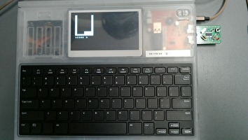
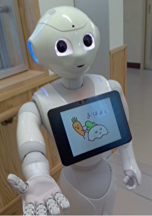

science club 2022
programing
-TOP NEWS-
このサイトが完成しました！
This year's plan
4月:このサイトの完成版を提供
5,6月:新入生を迎えるための準備
8,9月:文化祭、文化祭の準備
これまでの実績…
IchigoJam

写真のIchigoJamで、プログラミングの基礎を学んだ。よりレベルが高い言語にも応用できる技術を学び
ながら、プログラミングの楽しさを知ることができた。右の写真は、IchigoJamで作成したゲームの様子
である。作成したゲームは文化祭で発表した。例えば、RPGやシューティングゲーム、1vs1の格闘ゲームだ。
Pepper

近頃、Pepperを使った学習カリキュラムが盛んである。私達はそのPepperを使い、挨拶をするプログラ
ムを作ろうと考えた。そこで、私達は3つのプログラムを考えた。
1.挨拶をずっと繰り返すプログラム。
2.手を触ると挨拶をするプログラム。
3.顔認識をすると、挨拶をするプログラム。
私達がはじめに作ったプログラムでは、Pepperに挨拶を永遠と繰り返させた。しかし、私達が最初に目
指した「挨拶」とは異なると考えた。次に私たちは、手を触ると挨拶をしてくれるプログラムに変更した
が、コロナ禍という時代に合っていないと気づいた。顔認識のプログラムではそれらの課題を解決するこ
とができた。
高志中学校・高等学校のホームページはこちら